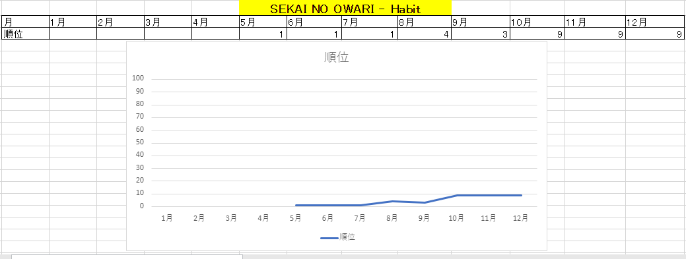
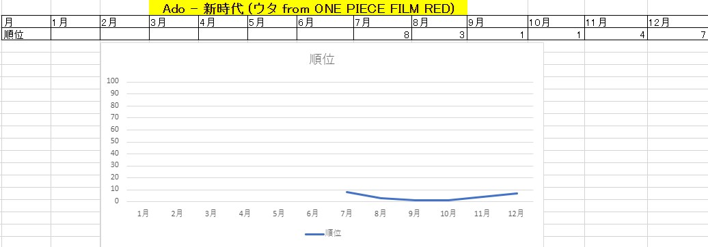
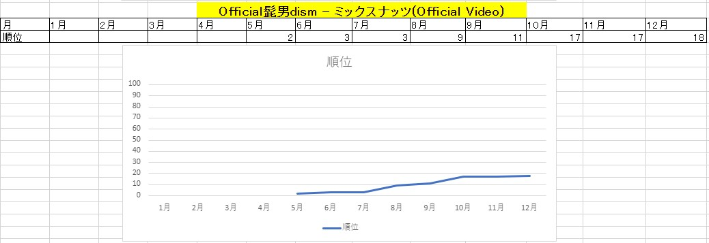
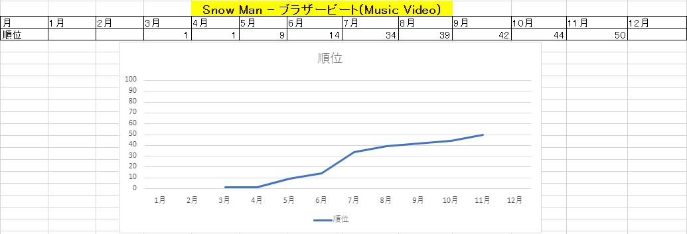
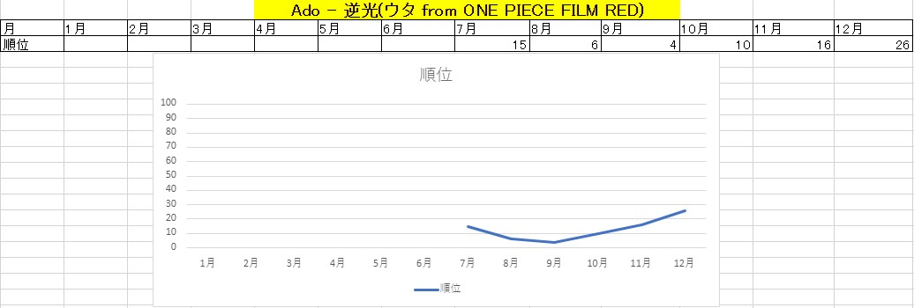
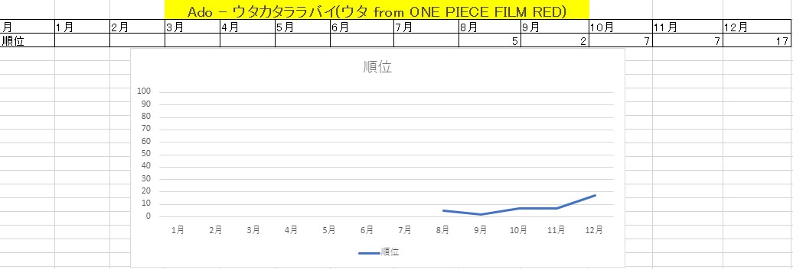
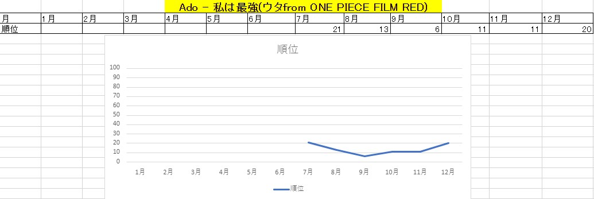
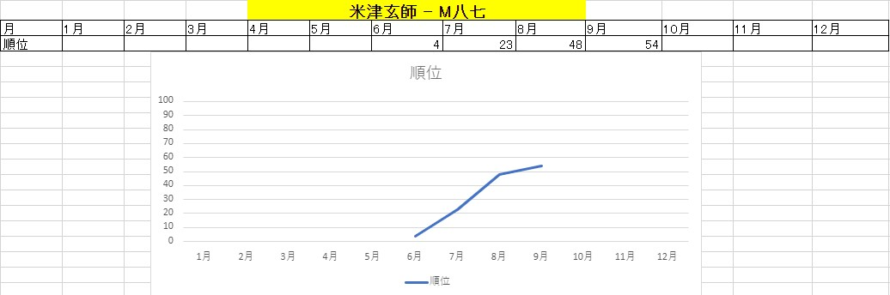
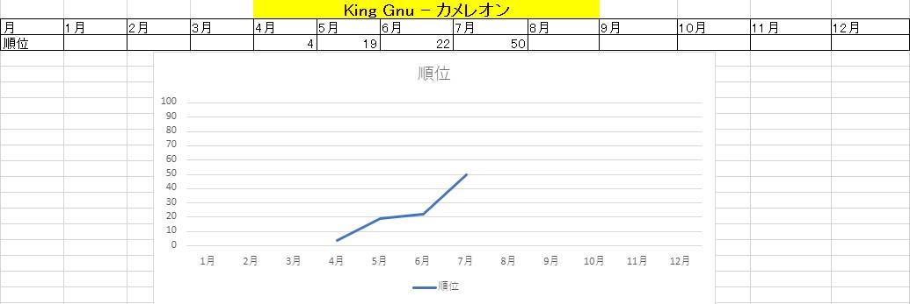

2022年日本国内音楽人気ランキング
第１位 SEKAI NO OWARI ― Habit

✅ 月毎の人気につながった出来事
- 5月 映画「ホリック xxxHOLiC」の主題歌
- 6月 HIKAKINとSEKAI NO OWARIがコラボ
- 7月 Tik Tokで流行り始める
- 8月 Tik Tokで踊ってみたや歌ってみたでまた流行りだす
- 9月 MV再生回数がバンド史上最速で1億回再生を達成
- 10月 Tik Tokで総再生回数が25億回を超える
- 11月 インスト音源を公開(公式音源を使って歌ってみたの動画を作成可能)
- 12月 第64回日本レコード大賞にて「レコード大賞」に輝いた
第２位 Ado ― 新時代（ウタ from ONE PIECE FILM RED）

✅ 月毎の人気につながった出来事
- 7月
- 8月 映画「ONE PIECE FILM RED」の主題歌
- 9月 Tik Tokで新時代ダンスが流行りだす
- 10月
- 11月
- 12月 MVのYou Tubeの再生回数が1億回を突破
第３位 Official髭男dism ― ミックスナッツ(Official Video)

✅ 月毎の人気につながった出来事
- 5月 アニメ「SPY×FAMILY」のオープニング曲
- 6月
- 7月 自身最速でストリーミング累計1億回再生突破
- 8月
- 9月
- 10月
- 11月
- 12月
第４位 Snow Man ― ブラザービート(Music Video)

✅ 月毎の人気につながった出来事
- 3月 映画「おそ松さん」の主題歌
- 4月
- 5月
- 6月
- 7月
- 8月
- 9月
- 10月
- 11月
第５位 Ado ― 逆光(ウタ from ONE PIECE FILM RED)

✅ 月毎の人気につながった出来事
- 7月 フルMVが公開
- 8月 映画「ONE PIECE FILM RED」の劇中歌
- 9月
- 10月 ストリーミング累計1億回再生突破
- 11月
- 12月
第６位 Ado ― ウタカタララバイ(ウタ from ONE PIECE FILM RED)

✅ 月毎の人気につながった出来事
- 8月 映画「ONE PIECE FILM RED」の劇中歌
- 9月
- 10月 ストリーミング累計1億回再生突破
- 11月
- 12月
第７位 Keip1er ― WA DA DA

✅ 月毎の人気につながった出来事
- 1月 リリースした
- 2月
- 3月 Tik Tokで踊ってみたでまた流行りだす
- 4月 MVが1億回再生を達成
- 5月
第８位 Ado ― 私は最強(ウタ from ONE PIECE FILM RED)

✅ 月毎の人気につながった出来事
- 7月 Mrs.GREEN APPLEが楽曲提供し、リリースした
- 8月 映画「ONE PIECE FILM RED」の劇中歌
- 9月
- 10月 ストリーミング累計1億回再生突破
- 11月
- 12月
第９位 米津玄師 ― M八七

✅ 月毎の人気につながった出来事
- 6月 映画「シン・ウルトラマン」の主題歌
- 7月 ウルトラマンの日である7月10日にアナログ盤を発売
- 8月
- 9月
第１０位 King Gnu ― カメレオン

✅ 月毎の人気につながった出来事
- 4月 ドラマ「ミステリと言う勿れ」の主題歌
- 5月
- 6月
- 7月